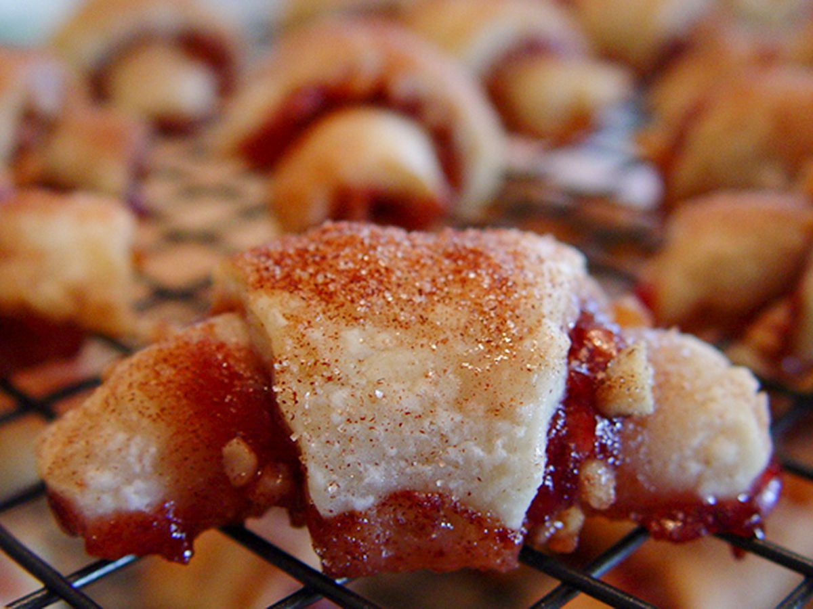

Rasperry and Appricot Rugelach

This blend of appricot and rasperry provides a
unique experience compared to other
desserts that may have been tried before.
The prep and cook time is very short, only taking up
around 30 minutes, with an additional two hours needed.
Ingredients
- 1 cup butter, softened
- 1 (8 ounce) package cream cheese, softened
- 1 teaspoon vanilla extract
- ¼ teaspoon salt
- 2 cups all-purpose flour
- ¾ cup white sugar
- 1 cup chopped walnuts
- ¾ cup dried apricots, chopped
- ¼ cup packed brown sugar
- 1 ½ teaspoons ground cinnamon
- ½ cup seedless raspberry preserves
- 1 tablespoon milk
Steps
- Beat butter and cream cheese with an electric mixer
on low speed in a bowl until blended and smooth.
Beat in vanilla extract, salt, 1 cup flour, and 1/4
cup sugar until blended. Stir in remaining flour by
hand using a spoon.
- Divide dough into 4 equal pieces. Wrap each piece
with plastic wrap and refrigerate until firm, at
least 2 hours or overnight.
- Stir walnuts, apricots, brown sugar, 1/4 cup plus 2
tablespoons white sugar, and 1/2 teaspoon cinnamon in
a medium bowl until well-mixed. Set filling aside.
- Preheat the oven to 325 degrees F (165 degrees C). Line
2 large baking sheets with foil and grease foil.
- Roll one piece of chilled dough on a lightly floured surface
with a floured rolling pin into a 9-inch round. Spread 2
tablespoons raspberry preserves on top. Sprinkle with about
1/2 cup apricot filling; gently press filling onto dough.
Cut dough into 12 equal wedges with a sharp knife or
pastry wheel. Starting at curved edge, roll up each wedge,
jelly-roll fashion. Place cookies on the prepared sheets,
point-side down, about 1/2 inch apart. Repeat with remaining
dough.
- Mix remaining 2 tablespoons sugar with 1 teaspoon cinnamon in
a small bowl. Use a pastry brush to brush rugelach with milk.
Sprinkle with cinnamon sugar.
- Bake rugelach in the preheated oven on 2 racks until golden,
30 to 35 minutes; rotate cookie sheets between upper and lower
racks halfway through baking time. Immediately remove rugelach
to wire racks to cool. Store cooled rugelach in a tightly covered
container.